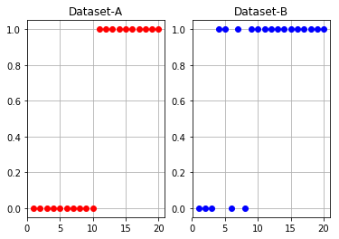
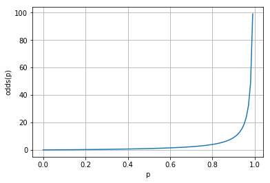
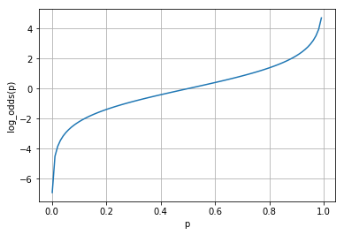
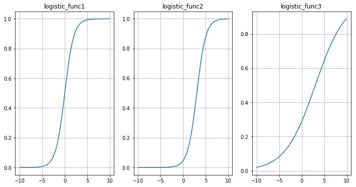
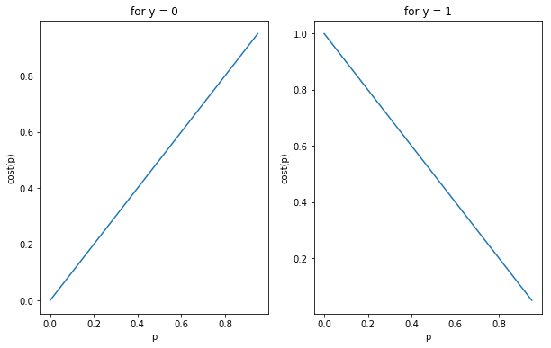
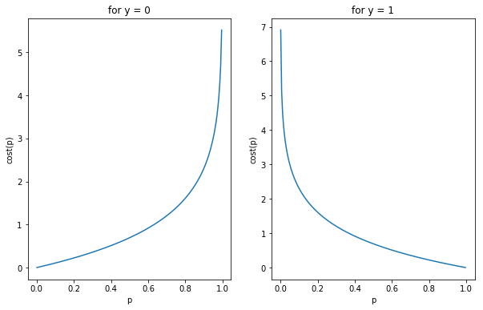
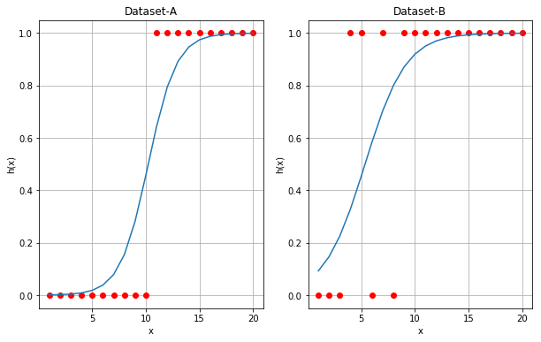

ML03 - 로지스틱 회귀
1 문제를 정의하기
1.1 데이터 세트
이해를 돕기 위하여 다음과 같이 두 종류의 데이터 세트를 준비하고 결과를 비교해 봅니다.
Dataset-A:
$$x=\left[ 1,2,3,4,5,6,7,8,9,10 \right] ,\quad y=[0,0,0,0,0,1,1,1,1,1]$$
Dataset-B:
$$x=\left[ 1,2,3,4,5,6,7,8,9,10 \right] ,\quad y=[0,0,0,0,1,0,1,1,1,1]$$
위에서 x는 독립 변수이고 y는 종속 변수입니다. y는 0 또는 1을 값으로 가집니다.

1.2 단계별로 과제 해결
아래에서 제시하는 단계별로 과제를 해결합니다.
- 데이터 세트를 잘 나타내는 hypothesis를 찾습니다.
- 데이터 세트의 y값과 hypothesis의 예측값의 차이를 나타내는 cost function을 정의합니다.
- 각각의 데이터 세트에 대하여 cost를 최소화하는 hypothesis의 파라미터를 찾습니다.
이렇게 얻은 hypothesis를 사용하여 새로운 데이터의 y값을 예측합니다.
2 Hypothesis 찾기
다음은 hypothesis를 정의하는데 도움이 될만한 데이터 세트의 특성입니다.
- 데이터의 x값에 따라 y값이 0과 1로 구분됩니다.
- x값이 어떤 임계값보다 작을 때는 y값이 0, 크면 y값이 1이라고 말할 수 있습니다.
- y값이 0인 데이터와 1인 데이터의 x값이 서로 겹치는 범위가 데이터 세트에 따라 매우 좁을 수도 있고 넓을 수도 있습니다.
이러한 특성을 고려하여 다음과 같은 의미를 가지는 hypothesis를 찾고자 합니다.
$$p(y=1|x;w)$$
위 표현은 파라미터 w가 정해지고 x값이 주어질 때 y값이 1일 가능성을 의미합니다. p가 가지는 값의 범위는 $0 \sim 1$입니다. p의 값이 0.5 이상이면 y값이 1, 0.5 미만이면 y값이 0이라고 판정합니다.
2.1 첫번째 시도
다음과 같이 hypothesis는 x의 1차식이라고 가정해 봅니다.
$${ h }_{ w }(x)=w_0+w_1x$$
그러면 $h_w(x)$가 가질 수 있는 값의 범위는 $-\infty \sim +\infty $가 되어 찾고자 하는 hypothesis가 될 수 없습니다.
2.2 두번째 시도
x의 일차식은 단조증가하거나 단조감소합니다. 따라서 좌변은 이러한 조건을 만족시키는 $h_w(x)$의 함수식이어야 합니다. y=0일 가능성 대비 y=1일 가능성의 비율이 단조증가하므로 hypothesis를 다음과 같이 가정해 봅니다.
$$\frac {h_w(x)}{1 - h_w(x)}=w_0+w_1x$$
하지만 $h_w(x)$가 $0 \sim 1$ 사이의 값을 가질 때 좌변이 가질 수 있는 값의 범위는 $0 \sim +\infty$로 여전히 우변이 가질 수 있는 값의 범위와 일치하지 않습니다.
참고로 y=0일 가능성 대비 y=1일 가능성의 비율을 odds ratio라고 부릅니다.
$$odds(p) = \frac {p} {1-p} =\frac {성공할 \quad 가능성} {실패할 \quad 가능성}$$

2.3 세번째 시도
값의 범위가 $0 \sim +\infty$일 때 로그를 적용하면 단조증가하면서 값의 범위가 $-\infty \sim +\infty$로 확장됩니다. 그래서 이번에는 좌변에 로그를 적용해 봅니다.
$$log(\frac {h_w(x)}{1 - h_w(x)})=w_0+w_1x$$
Odds ratio에 로그를 적용한 것을 로짓(logit) 함수라고 부릅니다.

이제 좌변과 우변 모두 동일한 값의 범위를 가지도록 하는 방법을 찾았습니다. 위 식을 hypothesis에 대하여 풀면 다음과 같습니다.
$$h_w(x)=\frac {1} {1+{ e }^{ -(w_0 + w_1x) }}$$
$x_0=1$이라고 정의하면 위 수식은 다음과 같이 표현할 수 있습니다.
$$w=(w_0,w_1), \quad x=(x_0,x_1)$$ $$w_0x_0 + w_1x_1 = w^Tx = z(x)$$ $$h_w(x)=\frac {1} {1+{ e }^{ -z(x) }}$$
이러한 형태의 함수를 로지스틱(logistic) 함수라고 합니다. 또한 그래프로 그려 보면 S자 모양과 비슷하며 시그모이드(sigmoid) 함수라고 부르기도 합니다.

여기서 눈여겨 볼 것은 좌변에서 사용할 $h_w(x)$의 함수식을 찾을 때 다음 두 가지를 만족시킬 수 있다면 logit 함수가 아니어도 된다는 사실입니다.
- 단조증가 또는 단조감소
- 값의 범위가 $-\infty \sim +\infty $
3 비용 함수 정의하기
선형 회귀에서와 같이 최소자승법을 사용하여 비용 함수를 정의하면 non-convex 함수가 되어 최소값을 찾는 것이 어려워집니다.
$$J(w)=\frac { 1 }{ m } \sum _{ i=1 }^{ m } \frac {1} {2} { (h_w(x^{(i)}) - y^{(i)})^2 }$$
그래서 convex 함수가 되도록 비용 함수를 정의해 보고자 합니다.
$$J(w)=\frac { 1 }{ m } \sum _{ i=1 }^{ m }{ Cost(h_w(x^{(i)}), y^{(i)}) }$$
3.1 첫번째 시도
개별 데이터에 대한 비용을 계산할 때 사용할 수식을 아래와 같이 정의하면 데이터 세트에 대한 비용 함수는 convex 형태가 됩니다.
$$Cost(h_{ w }(x^{ (i) }),y^{ (i) })=\quad \quad h_w(x^{(i)}), \quad for \quad y^{(i)}=0 $$
$$Cost(h_{ w }(x^{ (i) }),y^{ (i) })=1 - h_w(x^{(i)}), \quad for \quad y^{(i)}=1 $$

이것을 하나의 식으로 표현하면 다음과 같습니다.
$$Cost(h_{ w }(x^{ (i) }),y^{ (i) })=(1-y^{(i)}) h_w(x^{(i)}) + y^{(i)}(1-h_w(x^{(i)})$$
위의 정의에 따르면 y값이 0일 때 예측값이 1이 될 가능성이 0에 가까워지면 비용이 줄어들고, 1에 가까워지면 비용이 늘어나게 됩니다. 마찬가지로 y값이 1일 때 예측값이 1이 될 가능성이 0에 가까워지면 비용이 늘어나고 1에 가까워지면 비용이 줄어듭니다. 따라서 비용 함수를 위와 같이 정의하는 것이 타당하다고 할 수 있습니다.
3.2 두번째 시도
그런데 log를 사용하면 수학적으로 더 편리할뿐만 아니라 gradient descent 방식으로 최소값을 찾을 때 더 빠른 속도로 최소값에 접근하게 됩니다. 그래서 log를 사용해서 비용 함수를 다시 정의하면 다음과 같습니다.
$$Cost(h_{ w }(x^{ (i) }),y^{ (i) }) = -log(1-h_w (x^{(i)})), \quad {for} \quad y^{(i)} = 0$$
$$Cost(h_{ w }(x^{ (i) }),y^{ (i) }) = \quad \quad -log(h_w (x^{(i)})), \quad {for} \quad y^{(i)} = 1$$

이것을 하나의 식으로 표현하면 다음과 같습니다.
$$Cost(h_{ w }(x^{ (i) }),y^{ (i) })=-y^{(i)} log(h_w(x^{(i)})) - (1-y^{(i)})log(1-h_w(x^{(i)})$$
첫번째 시도에서 얻은 비용 함수와 비교해 보면 y값이 0일 때 예측값이 1이 될 가능성이 1에 가까워지면 비용이 훨씬 더 가파르게 증가합니다. gradient descent 방식에서는 경사가 심할수록 더 빠른 속도로 최소값에 접근합니다.
이제 하나의 데이터 세트에 대한 비용 함수를 다음과 같이 표현할 수 있습니다.
$$J(w)=\frac { 1 }{ m } \sum _{ i=1 }^{ m }{ \left[ -y^{(i)} log(h_w(x^{(i)})) - (1-y^{(i)})log(1-h_w(x^{(i)}) \right]}$$
4 파라미터 찾기
4.1 Gradient descent
비용 함수의 편미분을 사용하여 비용을 최소화하는 파라미터 w를 찾을 수 있습니다. 다음은 gradient descent 방식을 나타내는 알고리즘입니다.
{ w }{ j }:={ w }{ j }-\alpha \frac { \partial J(w) }{ \partial { w }_{ j } } \
} \quad \quad \quad \quad \quad \quad \quad \quad \quad \quad \quad $$
위의 식에서 $\alpha$는 학습률(learning rate)입니다.
4.2 파이썬 코드
아래 링크는 실습을 위해 작성한 파이썬 노트북입니다.
이 문서의 1.1 데이터 세트에서 제시한 두 종류의 데이터 세트에 대하여 각각 로지스틱 회귀를 적용하여 hypothesis의 파라미터를 찾습니다.
0, w: [ 1. 1.], total_cost: 3.26021492096
100, w: [-2.6355604 0.42721842], total_cost: 0.381607976117
200, w: [-4.20800179 0.33990582], total_cost: 0.259597699813
300, w: [-5.11107361 0.44791876], total_cost: 0.189260375224
400, w: [-5.67752132 0.55875972], total_cost: 0.14696429209
500, w: [-6.12954266 0.60842371], total_cost: 0.136285798335
600, w: [-6.52973682 0.64520282], total_cost: 0.128206376451
700, w: [-6.89004447 0.67842379], total_cost: 0.121658132782
800, w: [-7.21891096 0.70882576], total_cost: 0.116203273473
900, w: [-7.52228277 0.7369322 ], total_cost: 0.111561580443
999, w: [-7.80178475 0.76287476], total_cost: 0.107581904528
0, w: [ 1. 1.], total_cost: 1.26021492096
100, w: [-1.28554202 0.32823582], total_cost: 0.305950256446
200, w: [-2.03450316 0.42156667], total_cost: 0.285936892902
300, w: [-2.3862255 0.46758369], total_cost: 0.281598132252
400, w: [-2.57198045 0.49243347], total_cost: 0.280395854669
500, w: [-2.67574608 0.50646611], total_cost: 0.280021810942
600, w: [-2.73543813 0.51458526], total_cost: 0.279898223002
700, w: [-2.77033872 0.51934772], total_cost: 0.279856010509
800, w: [-2.79093454 0.52216342], total_cost: 0.279841317035
900, w: [-2.80315452 0.52383585], total_cost: 0.279836145885
999, w: [-2.81037234 0.52482432], total_cost: 0.279834324659
Gradient descent를 1000번 적용하여 얻은 w는 다음과 같습니다.
Dataset-A
999, w: [-7.80178475 0.76287476], total_cost: 0.107581904528
Dataset-B
999, w: [-2.81037234 0.52482432], total_cost: 0.279834324659
다음은 위에서 찾은 w를 사용하여 그래프로 그린 것입니다.

5 참고 자료
- The Sigmoid Function in Logistic Regression by Karl Rosaen
- What is a Logit Function and Why Use Logistic Regression? by KAREN GRACE-MARTIN